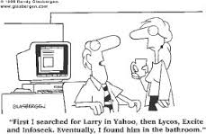
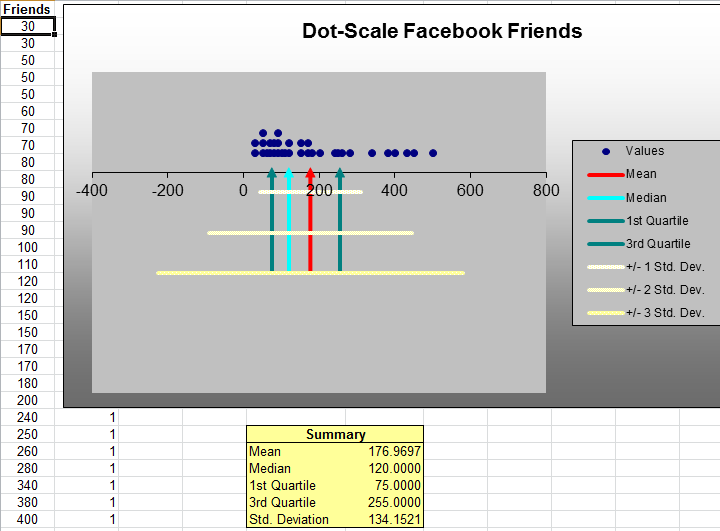

Organisational Memory

Organisational Memory is the storage of information in such a form that it can be later accessed and used for BI
Enterprise Data Warehouse

An EDW is either a integrated centralised single store of normalised data, a collection of data mart holding dimensional data, or a combination of both.
Data Warehousing
This section covers the extraction transformation and loading process as well as looking at the future of enterprise data warehouses.
Continuous Assessment

You will conduct statistical analysis on a dataset of Airbnb data and create an appropriate dashboard.
Lab-02

In our first set of labs we will be getting familiar with Microsoft Excel, a tool used by many organisation to evaluate daily performance and to make critical strategic and operational decisions.
Lab-03

This lab will focus on how to effectively summarise data quantitatively and perform some basic analyses for useful managerial information and insight. You will focus on descriptive statistics.
Lab-04

There is a need in data analysis to provide more than frequency distributions and histograms which only provide a basic summary. Numerical measures of location, dispersion, shape, and association provide more specific quantitative information about data. This lab will introduce you to measure of location such as average, median, and mode. Measures of dispersion which include the range, the variance, and standard deviation. Measures of shape includes coefficient of skewness. Measures of association which include correlation coefficient.